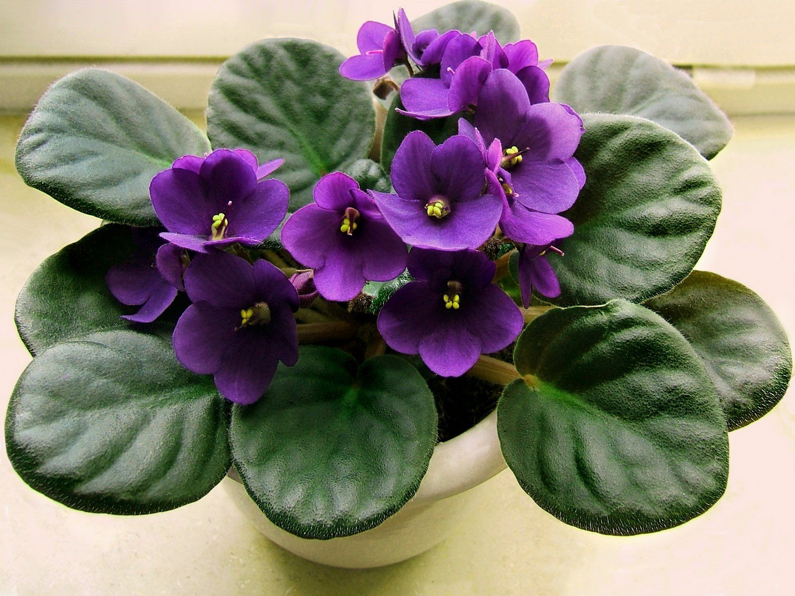

Фіалка часто сприймається як символ тепла та домашнього затишку. Догляд за фіалкою є вдячним завданням, а її присутність може створити атмосферу ніжності та гармонії в будь-якому інтер'єрі. Завдяки своїй невимогливості та красі, фіалка здатна привертати погляд і наповнювати приміщення енергією природної краси. На головну
